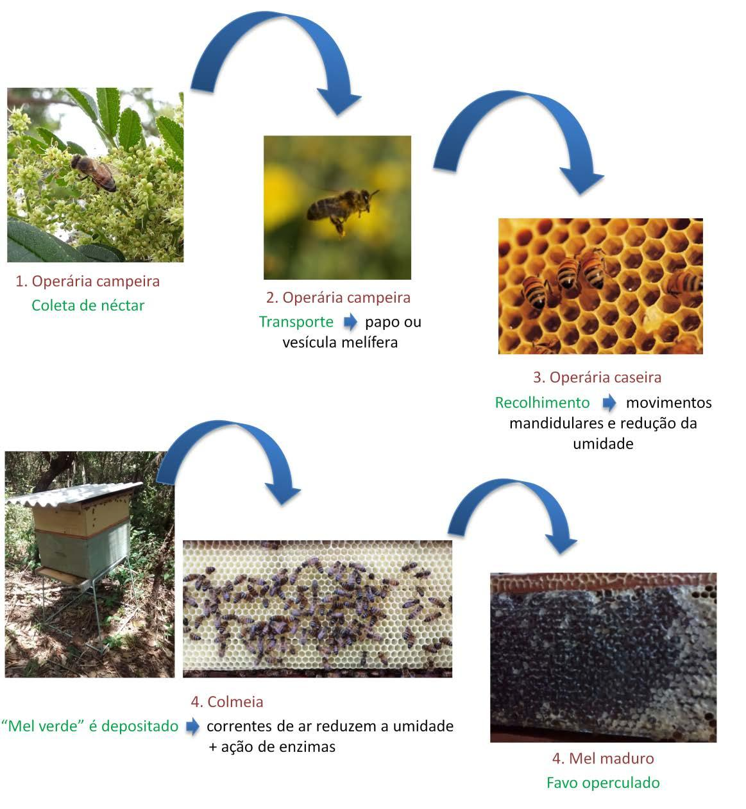
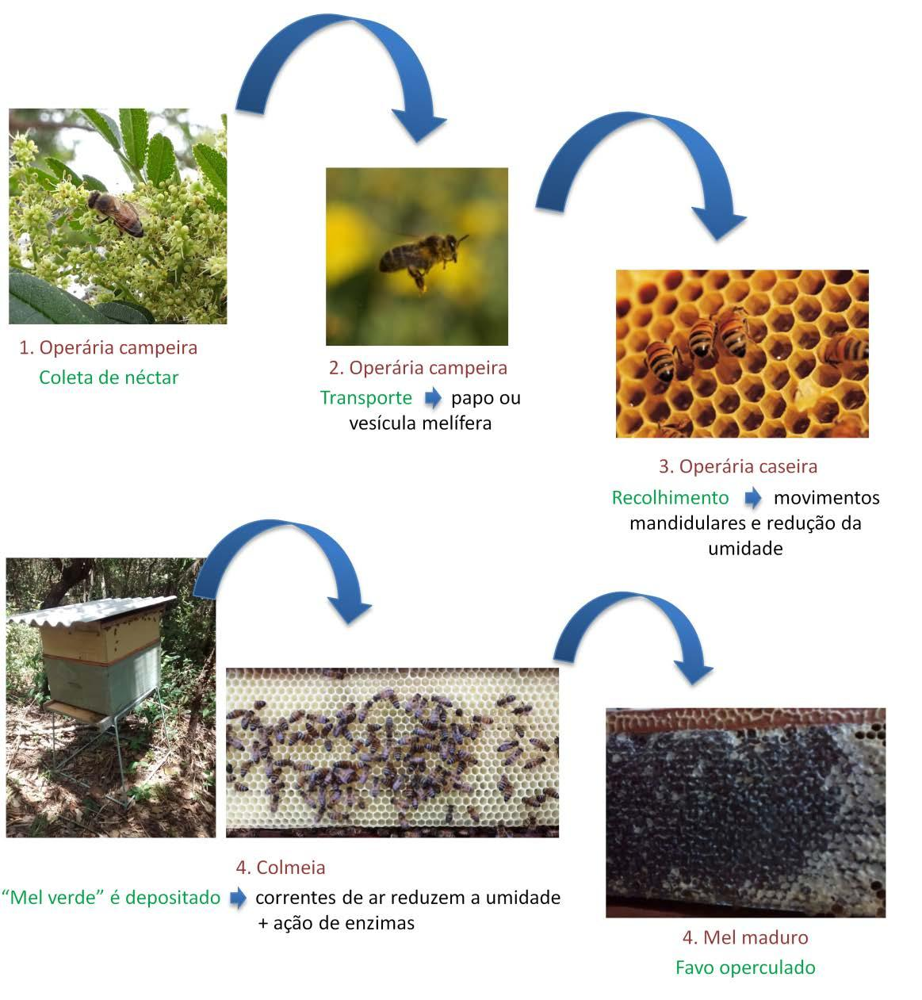

Mel das abelhas

O processo do Mel começa com a recepção das melgueiras com favos, seguido da retirada dos opérculos, ou desoperculação, na mesa desoperculadora. A extração é feita por centrifugação em um equipamento chamado centrífuga. 
O processo do Mel começa com a recepção das melgueiras com favos, seguido da retirada dos opérculos, ou desoperculação, na mesa desoperculadora. A extração é feita por centrifugação em um equipamento chamado centrífuga. 